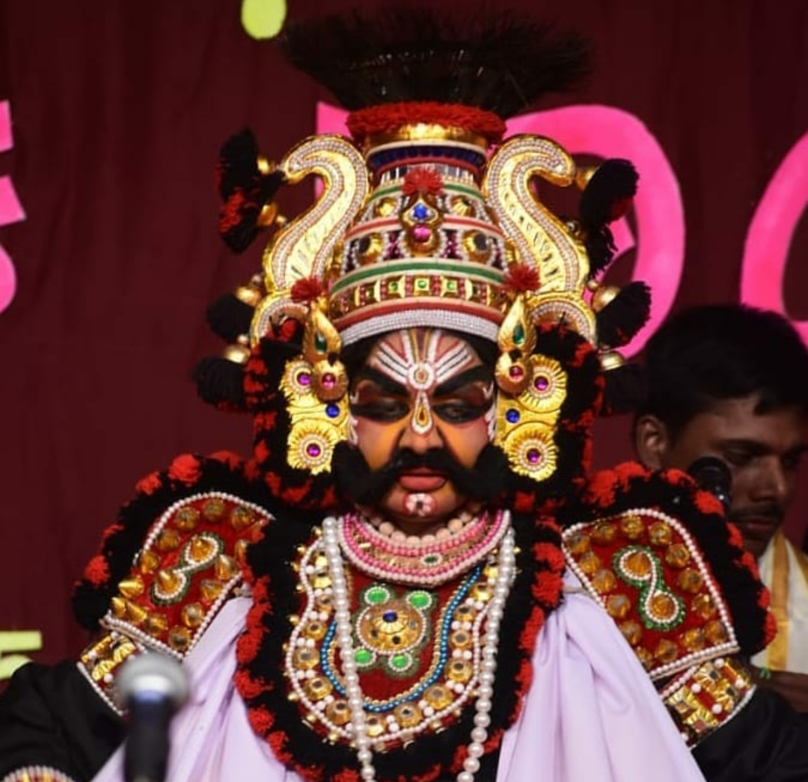
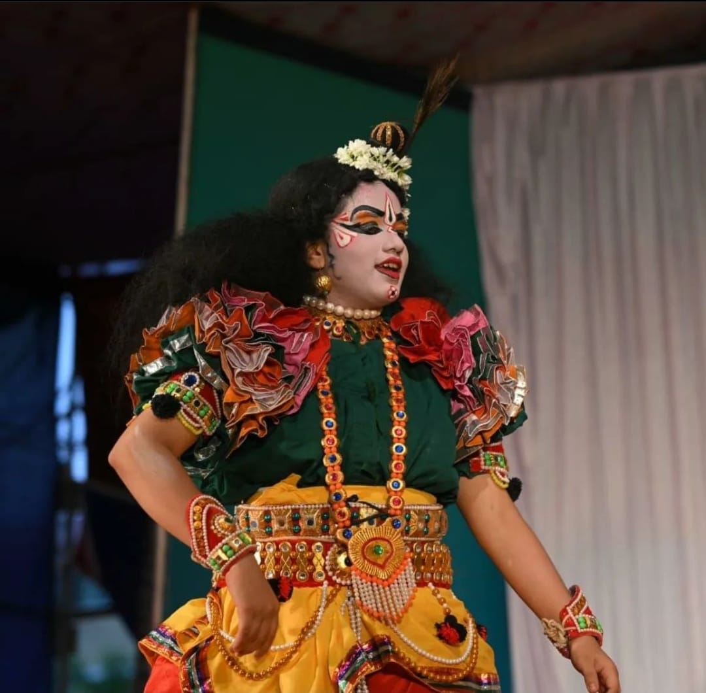
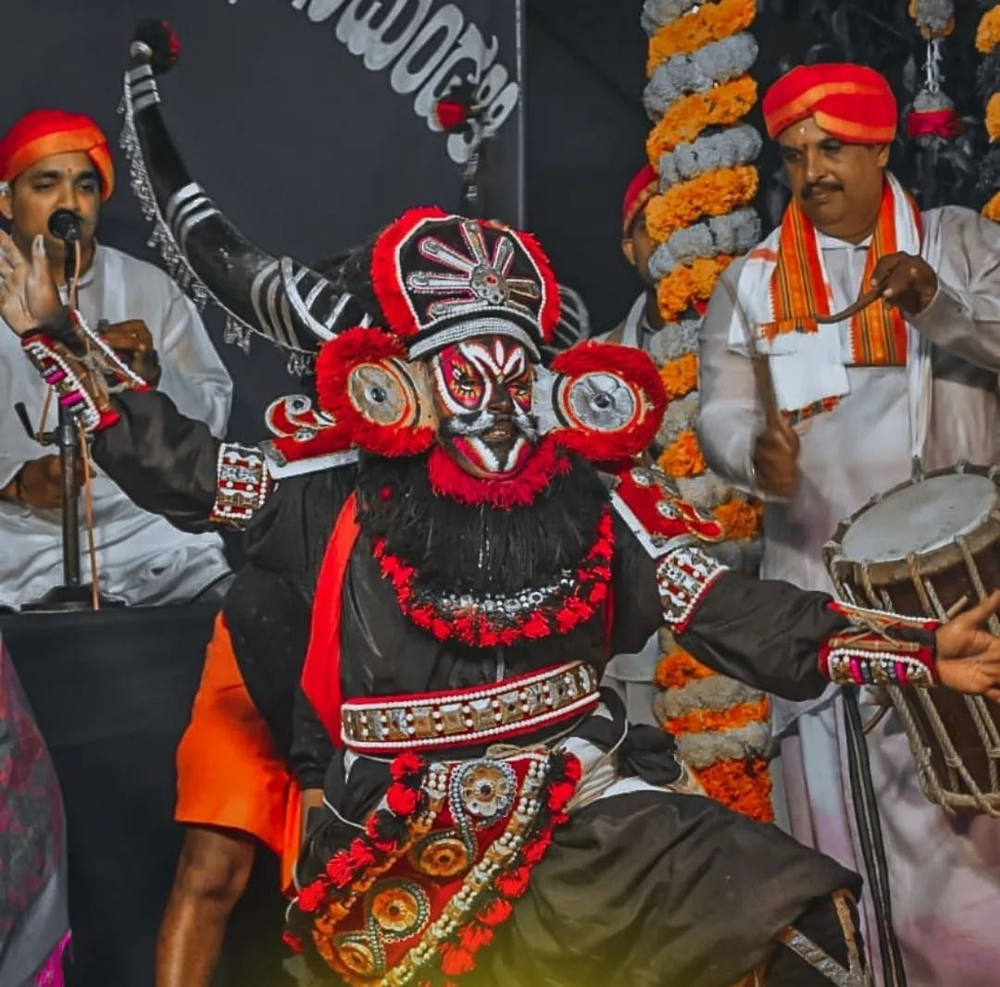
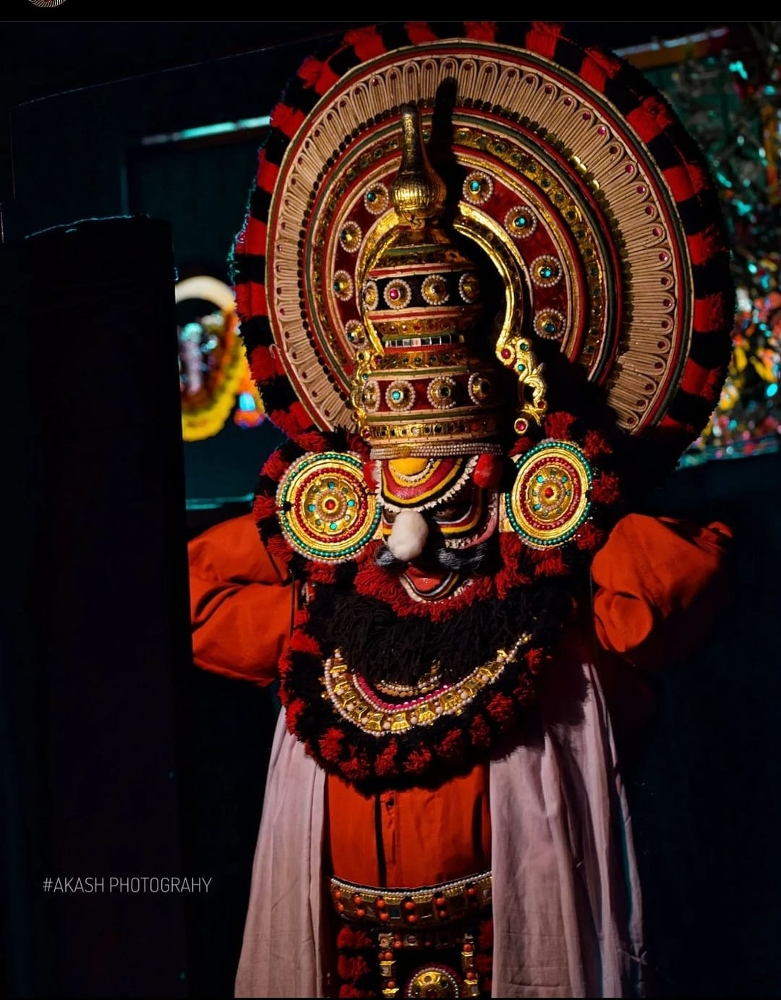

ಸುದರ್ಶನ
ವಿದ್ಯುನ್ಮಾಲಿ

ರಾವಣ
ಕೃಷ್ಣ
ಮಹಿಷಾಸುರ
ಶುಂಭಾಸುರ
Yakshagana is a traditional theatre, developed in Dakshina Kannada, Udupi, Uttara Kannada, Shimoga and western parts of Chikmagalur districts, in the state of Karnataka and in Kasaragod district in Kerala that combines dance, music, dialogue, costume, make-up, and stage techniques with a unique style and form. It is believed to have evolved from pre- classical music and theatre during the period of the Bhakti movement.It is sometimes simply called "Aata" or āṭa (meaning "the play").This theatre style is mainly found in coastal regions of Karnataka in various forms. Towards the south from Dakshina Kannada to Kasaragod of Tulu Nadu region, the form of Yakshagana is called Thenku thittu and towards the north from Udupi up to Uttara Kannada it is called Badaga thittu. Both of these forms are equally played all over the region.Yakshagana is traditionally presented from dusk to dawn. Its stories are drawn from Ramayana, Mahabharata, Bhagavata and other epics from both Hindu and Jain and other ancient Indic traditions. Read More...
| ಸುದರ್ಶನ |
 ವಿದ್ಯುನ್ಮಾಲಿ |
| ರಾವಣ |
 ಕೃಷ್ಣ |
|  ಮಹಿಷಾಸುರ |
 ಶುಂಭಾಸುರ |